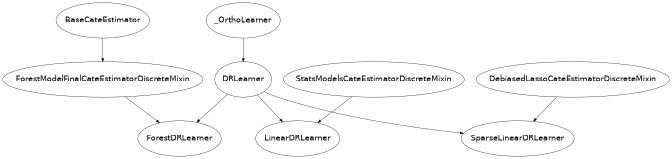

Doubly Robust Learning
What is it?
Doubly Robust Learning, similar to Double Machine Learning, is a method for estimating (heterogeneous) treatment effects when the treatment is categorical and all potential confounders/controls (factors that simultaneously had a direct effect on the treatment decision in the collected data and the observed outcome) are observed, but are either too many (high-dimensional) for classical statistical approaches to be applicable or their effect on the treatment and outcome cannot be satisfactorily modeled by parametric functions (non-parametric). Both of these latter problems can be addressed via machine learning techniques (see e.g. [Chernozhukov2016], [Foster2019]). The method dates back to the early works of [Robins1994], [Bang] (see [Tsiatis] for more details), which applied the method primarily for the estimation of average treatment effects. In this library we implement recent modifications to the doubly robust approach that allow for the estimation of heterogeneous treatment effects (see e.g. [Foster2019]). The method has also been recently heavily used in the context of policy learning (see e.g. [Dudik2014], [Athey2017]).
It reduces the problem to first estimating two predictive tasks:
predicting the outcome from the treatment and controls,
predicting the treatment from the controls;
Thus unlike Double Machine Learning the first model predicts the outcome from both the treatment and the controls as opposed to just the controls. Then the method combines these two predictive models in a final stage estimation so as to create a model of the heterogeneous treatment effect. The approach allows for arbitrary Machine Learning algorithms to be used for the two predictive tasks, while maintaining many favorable statistical properties related to the final model (e.g. small mean squared error, asymptotic normality, construction of confidence intervals). The latter favorable statistical properties hold if either the first or the second of the two predictive tasks achieves small mean squared error (hence the name doubly robust).
Our package offers several variants for the final model estimation. Many of these variants also provide valid inference (confidence interval construction) for measuring the uncertainty of the learned model.
What are the relevant estimator classes?
This section describes the methodology implemented in the classes, DRLearner,
LinearDRLearner,
SparseLinearDRLearner, ForestDRLearner.
Click on each of these links for a detailed module documentation and input parameters of each class.
When should you use it?
Suppose you have observational (or experimental from an A/B test) historical data, where some treatment/intervention/action \(T\) from among a finite set of treatments was chosen and some outcome(s) \(Y\) was observed and all the variables \(W\) that could have potentially gone into the choice of \(T\), and simultaneously could have had a direct effect on the outcome \(Y\) (aka controls or confounders) are also recorded in the dataset.
If your goal is to understand what was the effect of each of the treatments on the outcome as a function of a set of observable characteristics \(X\) of the treated samples, then one can use this method. For instance call:
from econml.dr import LinearDRLearner
est = LinearDRLearner()
est.fit(y, T, X=X, W=W)
est.effect(X, T0=t0, T1=t1)
This way an optimal treatment policy can be learned, by simply inspecting for which \(X\) the effect was positive.
Overview of Formal Methodology
The model’s assumptions are better explained in the language of potential outcomes. If we denote with \(Y^{(t)}\) the potential outcome that we would have observed had we treated the sample with treatment \(T=t\), then the approach assumes that:
It makes no further structural assumptions on \(g_t\) and \(p_t\) and estimates them non-parametrically using arbitrary non-parametric Machine Learning methods. Our goal is to estimate the CATE associated with each possible treatment \(t \in \{1, \ldots, n_t\}\), as compared to some baseline treatment \(t=0\), i.e.:
One way to estimate \(\theta_t(X)\) is the Direct Method (DM) approach, where we simply estimate a regression, regressing \(Y\) on \(T, X, W\) to learn a model of \(g_T(X, W) = \E[Y | T, X, W]\) and then evaluate \(\theta_t(X)\) by regressing
on \(X\). The main problem with this approach is that it is heavily dependent on the model-based extrapolation that is implicitly done via the model that is fitted in the regression. Essentially, when we evaluate \(g_t(X, W)\) on a sample with features \(X, W\) for which we gave some other treatment \(T=t'\), then we are extrapolating from other samples with similar \(X, W\), which received the treatment \(T=t\). However, the definition of “similarity” is very model based and in some cases we might even be extrapolating from very far away points (e.g. if we fit linear regression models).
An alternative approach that does not suffer from the aforementioned problems is the Inverse Propensity Score (IPS) approach. This method starts from the realization that, due to the unconfoundedness assumption, we can create an unbiased estimate of every potential outcome by re-weighting each sample by the inverse probability of that sample receiving the treatment we observed (i.e. up-weighting samples that have “surprising” treatment assignments). More concretely, if we let:
then it holds that:
Thus we can estimate a \(\theta_t(X)\) by regressing \(Y_{i, t}^{IPS} - Y_{i, 0}^{IPS}\) on \(X\). This method has two drawbacks: 1) first, even if we knew the probability of treatment \(p_t(X, W)\), the approach has high variance, because we are dividing the observation by a relatively small number (especially if some regions of \(X, W\), some treatments are quite unlikely), 2) second, in observational data we typically don’t know the probability of treatment and thereby we also need to estimate a model for the probability of treatment. This corresponds to a multi-class classification task, which when \(X, W\) are high dimensional or when we use non-linear models like random forests, could have slow estimation rates. This method will inherit these rates. Moreover, if we use ML to fit these propensity models, then it is hard to characterize what the limit distribution of our estimate will be so as to provide valid confidence intervals.
The Doubly Robust approach, avoids the above drawbacks by combining the two methods. In particular, it fits a direct regression model, but then debiases that model, by applying an Inverse Propensity approach to the residual of that model, i.e. it constructs the following estimates of the potential outcomes:
Then we can learn \(\theta_t(X)\) by regressing \(Y_{i, t}^{DR} - Y_{i, 0}^{DR}\) on \(X_i\).
This yields the overall algorithm: first learn a regression model \(\hat{g}_t(X, W)\), by running a regression of \(Y\) on \(T, X, W\) and a propensity model \(\hat{p}_t(X, W)\), by running a classification to predict \(T\) from \(X, W\). Then construct the doubly robust random variables as described above and regress them on \(X\).
The main advantage of the Doubly Robust method is that the mean squared error of the final estimate \(\theta_t(X)\),
is only affected by the product of the mean squared errors of the regression estimate \(\hat{g}_t(X, W)\) and
the propensity estimate \(\hat{p}_t(X, W)\). Thus as long as one of them is accurate then the final model is correct.
For instance, as long as neither of them converges at a rate slower than \(n^{-1/4}\), then the final model achieves
parametric rates of \(n^{-1/2}\). Moreover, under some further assumption on what estimation algorithm
was used in the final stage, then the final estimate is asymptotically normal and valid confidence intervals can be constructed.
For this theorem to hold, the nuisance
estimates need to be fitted in a cross-fitting manner (see _OrthoLearner).
The latter robustness property follows from the fact that the moment equations that correspond to the final
least squares estimation (i.e. the gradient of the squared loss), satisfy a Neyman orthogonality condition with respect to the
nuisance parameters \(q, f\). For a more detailed exposition of how Neyman orthogonality
leads to robustness we refer the reader to [Chernozhukov2016], [Mackey2017], [Nie2017], [Chernozhukov2017],
[Chernozhukov2018], [Foster2019]. In fact, the doubly robust estimator satisfies a slightly stronger property
then Neyman orthogonality, which is why it possess the stronger robustness guarantee that only the product
of the two mean squared errors of the first stage models, matter for the error and the distributional properties
of the final estimator.
The other advantage of the Doubly Robust method compared to the DML method, is that the final regression is meaningful even if the space of functions over which we minimize the final regression loss does not contain the true CATE function. In that case, the method will estimate the projection of the CATE function onto the space of models over which we optimize in the final regression. For instance, this allows one to perform inference on the best linear projection of the CATE function or to perform inference on the best CATE function on a subset of the features that could potentially be creating heterogeneity. For instance, one can use the DR method with a non-parametric final model like an Honest Forest and perform inference of the marginal treatment effect heterogeneity with respect to a single feature, without making any further assumptions on how that treatment effect heterogeneity looks like.
The downside of the DR method over DML is that it typically has higher variance, especially when there are regions of the control space, \(X, W\), in which some treatment has a small probability of being assigned (typically referred to as “small overlap” in the literature). In such settings, the DML method could potentially extrapolate better, as it only requires good overlap “on-average” to achieve good mean squared error.
Class Hierarchy Structure
In this library we implement several variants of the Doubly Robust method, dependent on what type of estimation algorithm is chosen for the final stage. The user can choose any regression/classification method for the first stage models in all these variants. The hierarchy structure of the implemented CATE estimators is as follows.

Below we give a brief description of each of these classes:
DRLearner. The class
DRLearnermakes no assumption on the effect model for each outcome \(i\) and treatment \(t\). Any scikit-learn regressor can be used for the final stage estimation. Similarly, any scikit-learn regressor can be used for the regression model and any scikit-learn classifier can be used for the propensity model:from econml.dr import DRLearner from sklearn.ensemble import GradientBoostingRegressor, GradientBoostingClassifier est = DRLearner(model_regression=GradientBoostingRegressor(), model_propensity=GradientBoostingClassifier(), model_final=GradientBoostingRegressor()) est.fit(y, T, X=X, W=W) point = est.effect(X, T0=T0, T1=T1)Examples of models include Random Forests (
RandomForestRegressor), Gradient Boosted Forests (GradientBoostingRegressor) and Support Vector Machines (SVC). Moreover, one can even use cross validated estimators that perform automatic model selection for each of these models:from econml.dr import DRLearner from sklearn.ensemble import RandomForestRegressor, RandomForestClassifier from sklearn.model_selection import GridSearchCV model_reg = lambda: GridSearchCV( estimator=RandomForestRegressor(), param_grid={ 'max_depth': [3, None], 'n_estimators': (10, 50, 100) }, cv=10, n_jobs=-1, scoring='neg_mean_squared_error' ) model_clf = lambda: GridSearchCV( estimator=RandomForestClassifier(min_samples_leaf=10), param_grid={ 'max_depth': [3, None], 'n_estimators': (10, 50, 100) }, cv=10, n_jobs=-1, scoring='neg_mean_squared_error' ) est = DRLearner(model_regression=model_reg(), model_propensity=model_clf(), model_final=model_reg(), cv=5) est.fit(y, T, X=X, W=W) point = est.effect(X, T0=T0, T1=T1)From that respect this estimator is also a Meta-Learner, since all steps of the estimation use out-of-the-box ML algorithms. For more information, check out Meta Learners User Guide. This general method was proposed in [Foster2019].
LinearDRLearner. The child class
LinearDRLearner, uses an unregularized final linear model and essentially works only when the feature vector \(\phi(X)\) is low dimensional. Given that it is an unregularized low dimensional final model, this class also offers confidence intervals via asymptotic normality arguments. This is achieved by essentially using theStatsModelsLinearRegression(which is an extension of the scikit-learn LinearRegression estimator, that also supports inference functionalities) as a final model. The theoretical foundations of this class essentially follow the arguments in [Chernozhukov2016]. For instance, to get confidence intervals on the effect of going from the baseline treatment (assumed to be treatment 0) to any other treatment T1, one can simply call:from econml.dr import LinearDRLearner est = LinearDRLearner() est.fit(y, T, X=X, W=W) point = est.effect(X, T1=t1) lb, ub = est.effect_interval(X, T1=t1, alpha=0.05) # Get CATE for all treatments point = est.const_marginal_effect(X) lb, ub = est.const_marginal_effect_interval(X, alpha=0.05)One could also construct bootstrap based confidence intervals by setting inference=’bootstrap’.
SparseLinearDRLearner. The child class
SparseLinearDRLearner, uses an \(\ell_1\)-regularized final model. In particular, it uses our implementation of the DebiasedLasso algorithm [Buhlmann2011] (seeDebiasedLasso). Using the asymptotic normality properties of the debiased lasso, this class also offers asymptotically normal based confidence intervals. The theoretical foundations of this class essentially follow the arguments in [Chernozhukov2017], [Chernozhukov2018]. For instance, to get confidence intervals on the effect of going from any treatment T0 to any other treatment T1, one can simply call:from econml.dr import SparseLinearDRLearner est = SparseLinearDRLearner() est.fit(y, T, X=X, W=W) point = est.effect(X, T1=T1) lb, ub = est.effect_interval(X, T1=T1, alpha=0.05) # Get CATE for all treatments point = est.const_marginal_effect(X) lb, ub = est.const_marginal_effect_interval(X, alpha=0.05)ForestDRLearner. The child class
ForestDRLearneruses a Subsampled Honest Forest regressor as a final model (see [Wager2018] and [Athey2019]). The subsampled honest forest is implemented in our library as a scikit-learn extension of theRandomForestRegressor, in the classRegressionForest. This estimator offers confidence intervals via the Bootstrap-of-Little-Bags as described in [Athey2019]. Using this functionality we can also construct confidence intervals for the CATE:from econml.dr import ForestDRLearner from sklearn.ensemble import GradientBoostingRegressor, GradientBoostingClassifier est = ForestDRLearner(model_regression=GradientBoostingRegressor(), model_propensity=GradientBoostingClassifier()) est.fit(y, T, X=X, W=W) point = est.effect(X, T0=T0, T1=T1) lb, ub = est.effect_interval(X, T0=T0, T1=T1, alpha=0.05)This method is related to the
DROrthoForestand you can check [Oprescu2019] for more technical details; the main difference being how the nuisance models are being constructed for the CATE estimation at some target \(X=x\). Check out Forest Estimators User Guide for more information on forest based CATE models and other alternatives to theCausalForestDML.
Usage FAQs
What if I want confidence intervals?
For valid confidence intervals use the
LinearDRLearnerif the number of features \(X\), that you want to use for heterogeneity are small compared to the number of samples that you have, e.g.:from econml.dr import LinearDRLearner est = LinearDRLearner() est.fit(y, T, X=X, W=W) lb, ub = est.const_marginal_effect_interval(X, alpha=.05) lb, ub = est.coef__interval(T=1, alpha=.05) lb, ub = est.effect_interval(X, T0=T0, T1=T1, alpha=.05)
If the number of features is comparable or even larger than the number of samples, then use
SparseLinearDRLearner, withinference='debiasedlasso. If you want non-linear models then useForestDRLearnerwithinference='blb'.What if I have no idea how heterogeneity looks like?
Either use a flexible featurizer, e.g. a polynomial featurizer with many degrees and use the
SparseLinearDRLearner:from econml.dr import SparseLinearDRLearner from sklearn.preprocessing import PolynomialFeatures est = SparseLinearDRLearner(featurizer=PolynomialFeatures(degree=3, include_bias=False)) est.fit(y, T, X=X, W=W) lb, ub = est.const_marginal_effect_interval(X, alpha=.05) lb, ub = est.coef__interval(T=1, alpha=.05) lb, ub = est.effect_interval(X, T0=T0, T1=T1, alpha=.05)
Alternatively, you can also use a forest based estimator such as
ForestDRLearner. This estimator can also handle many features, albeit typically smaller number of features than the sparse linear DRLearner. Moreover, this estimator essentially performs automatic featurization and can fit non-linear models.from econml.dr import ForestDRLearner from sklearn.ensemble import GradientBoostingRegressor, GradientBoostingClassifier est = ForestDRLearner(model_regression=GradientBoostingRegressor(), model_propensity=GradientBoostingClassifier()) est.fit(y, T, X=X, W=W) point = est.effect(X, T0=T0, T1=T1) lb, ub = est.effect_interval(X, T0=T0, T1=T1, alpha=0.05) lb, ub = est.const_marginal_effect_interval(X, alpha=0.05)
If you care more about mean squared error than confidence intervals and hypothesis testing, then use the
DRLearnerclass and choose a cross-validated final model (checkout the Forest Learners Jupyter notebook for such an example). Also the check out the Orthogonal Random Forest User Guide or the Meta Learners User Guide.What if I have too many features that can create heterogeneity?
Use the
SparseLinearDRLearnerorForestDRLearnerorDRLearner. (see above).What if I have too many features I want to control for?
Use first stage models that work well with high dimensional features. For instance, the Lasso or the ElasticNet or gradient boosted forests are all good options (the latter allows for non-linearities in the model but can typically handle fewer features than the former), e.g.:
from econml.dr import SparseLinearDRLearner from sklearn.linear_model import LassoCV, LogisticRegressionCV, ElasticNetCV from sklearn.ensemble import GradientBoostingRegressor est = SparseLinearDRLearner(model_regression=LassoCV(), model_propensity=LogisticRegressionCV()) est = SparseLinearDRLearner(model_regression=ElasticNetCV(), model_propensity=LogisticRegressionCV()) est = SparseLinearDRLearner(model_regression=GradientBoostingRegressor(), model_propensity=GradientBoostingClassifier())
The confidence intervals will still be valid, provided that these first stage models achieve small mean squared error.
What should I use for first stage estimation?
See above. The first stage problems are pure predictive tasks, so any ML approach that is relevant for your prediction problem is good.
How do I select the hyperparameters of the first stage models or the final model?
You can use cross-validated models that automatically choose the hyperparameters, e.g. the
LassoCVinstead of theLasso. Similarly, for forest based estimators you can wrap them with a grid search CV,GridSearchCV, e.g.:from econml.dr import DRLearner from sklearn.ensemble import RandomForestRegressor, RandomForestClassifier from sklearn.model_selection import GridSearchCV model_reg = lambda: GridSearchCV( estimator=RandomForestRegressor(), param_grid={ 'max_depth': [3, None], 'n_estimators': (10, 50, 100) }, cv=5, n_jobs=-1, scoring='neg_mean_squared_error' ) model_clf = lambda: GridSearchCV( estimator=RandomForestClassifier(min_samples_leaf=10), param_grid={ 'max_depth': [3, None], 'n_estimators': (10, 50, 100) }, cv=5, n_jobs=-1, scoring='neg_mean_squared_error' ) est = DRLearner(model_regression=model_reg(), model_propensity=model_clf(), model_final=model_reg(), cv=5) est.fit(y, T, X=X, W=W) point = est.effect(X, T0=T0, T1=T1)
Alternatively, you can pick the best first stage models outside of the EconML framework and pass in the selected models to EconML. This can save on runtime and computational resources. Furthermore, it is statistically more stable since all data is being used for hyper-parameter tuning rather than a single fold inside of the DML algorithm (as long as the number of hyperparameter values that you are selecting over is not exponential in the number of samples, this approach is statistically valid). E.g.:
from econml.dr import DRLearner from sklearn.ensemble import RandomForestRegressor, RandomForestClassifier from sklearn.model_selection import GridSearchCV model_reg = lambda: GridSearchCV( estimator=RandomForestRegressor(), param_grid={ 'max_depth': [3, None], 'n_estimators': (10, 50, 100) }, cv=5, n_jobs=-1, scoring='neg_mean_squared_error' ) model_clf = lambda: GridSearchCV( estimator=RandomForestClassifier(min_samples_leaf=10), param_grid={ 'max_depth': [3, None], 'n_estimators': (10, 50, 100) }, cv=5, n_jobs=-1, scoring='neg_mean_squared_error' ) XW = np.hstack([X, W]) model_regression = model_reg().fit(XW, Y).best_estimator_ model_propensity = model_clf().fit(XW, T).best_estimator_ est = DRLearner(model_regression=model_regression, model_propensity=model_propensity, model_final=model_regression, cv=5) est.fit(y, T, X=X, W=W) point = est.effect(X, T0=T0, T1=T1)
What if I have many treatments?
The method allows for multiple discrete (categorical) treatments and will estimate a CATE model for each treatment.
How can I assess the performance of the CATE model?
Each of the DRLearner classes have an attribute score_ after they are fitted. So one can access that attribute and compare the performance across different modeling parameters (lower score is better):
from econml.dr import DRLearner from sklearn.ensemble import RandomForestRegressor, RandomForestClassifier est = DRLearner(model_regression=RandomForestRegressor(oob_score=True), model_propensity=RandomForestClassifier(min_samples_leaf=10, oob_score=True), model_final=RandomForestRegressor()) est.fit(y, T, X=X, W=W) est.score_
This essentially measures the score based on the final stage loss. Moreover, one can assess the out-of-sample score by calling the score method on a separate validation sample that was not used for training:
est.score(Y_val, T_val, X_val, W_val)
Moreover, one can independently check the goodness of fit of the fitted first stage models by inspecting the fitted models. You can access the nested list of fitted first stage models (one for each fold of the crossfitting structure) via the methods: models_t and models_y. Then if those models also have a score associated attribute, that can be used as an indicator of performance of the first stage. For instance in the case of Random Forest first stages as in the above example, if the oob_score is set to True, then the estimator has a post-fit measure of performance:
[mdl.oob_score_ for mdls in est.models_regression for mdl in mdls]
If one uses cross-validated estimators as first stages, then model selection for the first stage models is performed automatically.
How should I set the parameter `cv`?
This parameter defines the number of data partitions to create in order to fit the first stages in a crossfitting manner (see
_OrthoLearner). The default is 2, which is the minimal. However, larger values like 5 or 6 can lead to greater statistical stability of the method, especially if the number of samples is small. So we advise that for small datasets, one should raise this value. This can increase the computational cost as more first stage models are being fitted.
Usage Examples
Check out the following Jupyter notebooks: